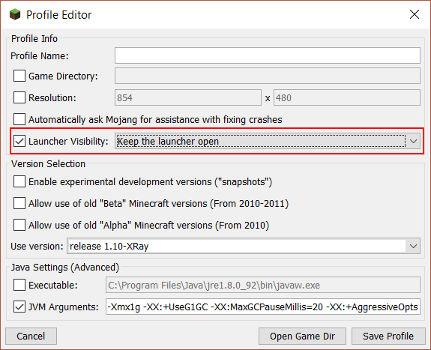

Please submit all bug reports to me on my post on the Minecraft Forum. Either as a reponse on the thread, or private message. You can expect a response within 24 hours.
Before you submit any type of bug report, check to make sure you are using the latest version of XRay. If you're not, you may be about to report a bug that I have already fixed!
Feel free to upload logs to pastebin to make your post less cluttered. You can set it to expire after a week.
A good bug report will help me identify the issue quicky, and allow me to get an fix out much quicker than if you submit a bug report with missing information. Below I have outlined the information I need depending on whether your game crashes or not.
My game crashed
All I need is the complete crash dump. If you have other mods installed, please list those as well.
My game did not crash
If you are experiencing a bug without a crash, then I need a game output log as well as a list of any other mods installed. Also make sure you include a description of the bug, and the steps necessary to reproduce it.
Below are steps to obtain a game output log.
- Click Edit Profile

- Check Launcher Visibility and select Keep the launcher open

- Launch the game and repeat the steps necessary to replicate the bug. Then in the Game Output window, copy
all the text. Include this in your bug report.